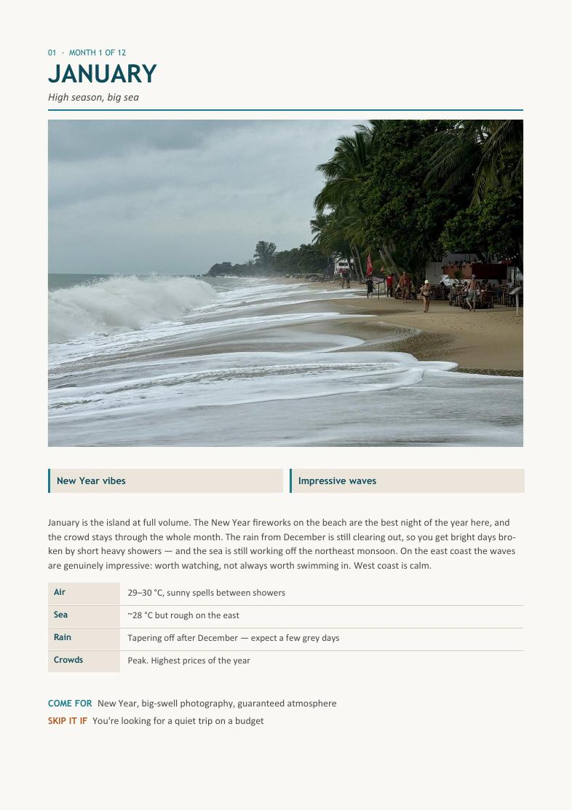
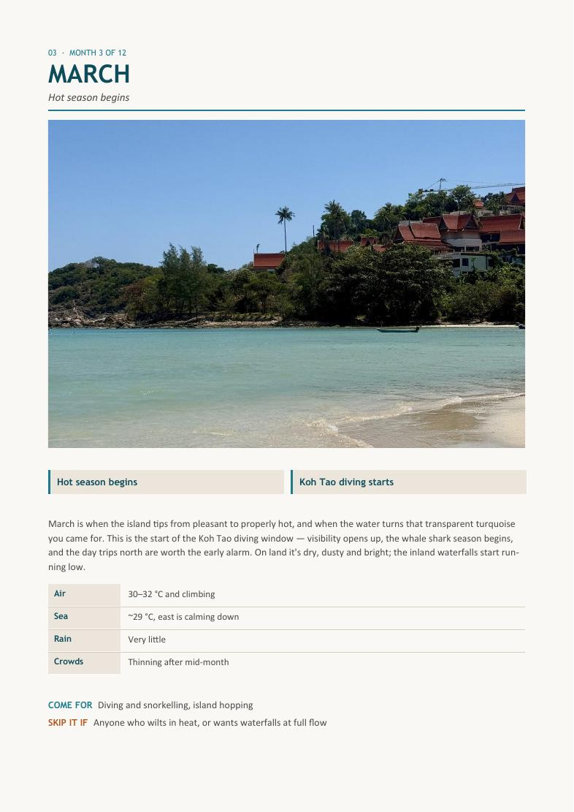
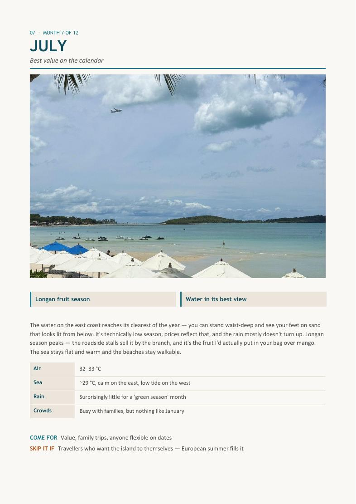

"Go to Thailand in winter" is only half right for Samui.
We sit in the Gulf, on a reversed monsoon — dry when the rest of the country is wet, rough when the brochures say peak season. Twelve months, twelve pages, and no month written off.
Shown in your currency, VAT included. PDF emailed straight after payment.
The same four numbers for every month — and a verdict on each.
- Air, sea, rain and crowds, month by month
The same four lines for all twelve, so you can compare properly instead of reading twelve different write-ups that measure different things.
- "Come for" and "skip it if" on every month
January is New Year fireworks and genuinely impressive swell — worth watching, not always worth swimming in. February is the postcard version at high-season prices. Each month gets both verdicts.
- Pick by what actually matters to you
A one-page table: clearest water, best value, emptiest beaches, festivals, fruit season, Christmas — each mapped to its months. Start there if you're flexible.
- The reversed monsoon, explained once, properly
Our rain comes in October and November, not summer. That single fact undoes most of the advice you'll read elsewhere about Thailand.
- Which coast to be on, when
The east takes the swell in winter; the west goes long and shallow in summer. Your month decides your coast — and that decides where you book.
- The months to think twice about
Named plainly, with what to do if you're already booked in one of them.



Take the short answer and January, free.
Three pages: the cover, the pick-by-what-matters table, and January in full. The table alone will tell most people which two months to look at.
Who this isn't for.
- Your dates are fixed and can't move. Read the free month notes on the weather page instead — this one is for people still choosing.
- You want a forecast for a specific week. Nobody can give you that six months out, and I won't pretend to. This is patterns, not predictions.
- You want to see conditions right now. The live cameras are free and always will be.
- You've already decided the month and just need somewhere to stay. Go to the Area Guide.
€5 to stop guessing which two weeks to take off work.
Instant download, no account, no subscription. Written as patterns, not dated entries — so it doesn't go stale next season.
Shown in your currency, VAT included. PDF emailed straight after payment.
The questions I actually get.
Isn't this just weather averages I could Google?
The averages are the easy part and they're in here. What isn't online is what 29°C with a working sea actually looks like on the east coast in January, or why March is when the Koh Tao diving window opens. That's the part you're paying for.
Will it go out of date?
No. It's written as patterns rather than dated entries, so it holds year to year. I review it once a year rather than once a month.
What format is it?
A 15-page PDF. Opens on any device, works offline, yours forever.
Does it cover festivals?
Yes — Songkran in April, Loy Krathong in November, Chinese New Year in February, and the smaller local ones that don't make the tourist calendars.
I'm choosing between two specific months. Is that enough reason to buy?
Honestly, the free sample table might settle it for you. If it doesn't, the two month pages will.
What if it's not what I expected?
That's exactly what the free sample is for — real pages, not a teaser, before you pay anything. Because the file downloads instantly and can't be handed back, sales are final once you've got it. If the download fails or the file is broken, message me and I'll fix it or refund it.

I've lived on Koh Samui for three years. Three full cycles of the same twelve months — the ones the forecast apps get wrong, the ones that are quietly the best value, and the two I'd book without thinking. Most incoming questions I get are weather questions, so this is the answer, written once.